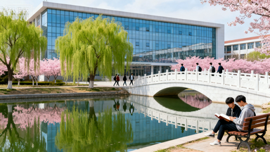
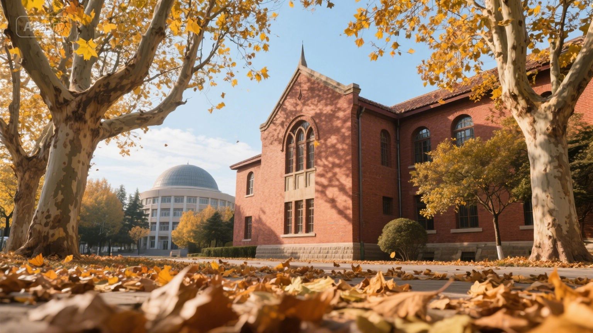

鲁东大学的秋，藏在经纬楼旁的银杏道里。
十月末的风一拂，扇形叶片便簌簌落下，铺成满地金黄，阳光穿过枝桠洒下，光斑在行人肩头轻轻跳跃。
常有学生捧着书本走过，鞋底碾过落叶的 “沙沙” 声，与教学楼里传来的诵读声交织，成了秋日最温柔的背景音。
三元湖畔的秋意更显灵动。岸边的法桐褪去浓绿，染上焦糖与橙红，倒映在澄澈的湖水里，像打翻了调色盘。
偶有白鹅划破水面，涟漪带着树影轻轻晃动，引得写生的同学频频抬笔。傍晚时分，夕阳把图书馆的红砖墙染得愈发温暖，抱着暖饮的学子坐在湖畔长椅上，看晚霞漫过远处的凤凰山，连时光都似放慢了脚步。
这秋没有萧瑟，只有藏在枝叶间的诗意，和校园里蓬勃的朝气，让人忍不住想把每一片落叶、每一缕晚风，都妥帖收进记忆里。
食堂后的柿子树是秋日里最惹眼的景致。
枝桠上挂满橙红的柿子，像缀满了小灯笼，风一吹便轻轻摇晃，引得路过的同学忍不住驻足拍照。
树下常有保洁阿姨清扫落叶，偶尔捡起被风吹落的完整柿子，笑着递给身边的学生，暖融融的笑意比阳光更动人。
运动场边的秋也别有滋味。
跑道旁的垂柳虽褪去了盛夏的浓荫，细长的枝条却仍带着浅黄的生机，伴着学子奔跑的身影轻轻摆动。
傍晚的运动场上，有人迎着晚风踢足球，有人在看台旁分享刚买的热烤红薯，香甜的气息混着秋日的微凉，成了独属于青春的温暖记忆。就连宣传栏里新贴的秋日活动海报，都似被染上了一层柔和的秋光，满是活力与期待。